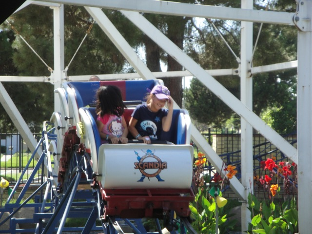

| |

Little Dipper Review

We're here at Scandia, where we'll be reviewing their kiddy coaster. Little Dipper. If you're really whorish, you'll climb in the car, the operator will pull down the lap bar, and you're off. You first start off by going around a turn. The turn is surrounded by these hedges smaller than us, which makes us feel like giants. We then reach the lift hill. Now this has got to have the weirdest and most bizzare lift hill of any coaster I've been on. You go up a quarter of the lifthill, stop, begin to roll back, and then you latch onto the lifthill and climb the lifthill. I thought that we broke it the first time due to our size. Anyways, we climb up the puny lifthill, and then go down a small dip. We then rise up, see the top of the fence, dip down and go through these two really small bunny hops. And yeah. Thats it. You just repeat the course again. I had a lot of fun being an idiot on this ride, but yeah. Big Credit Whores only.
2/10
Location: Scandia
Opened: Unknown
Built by: Unknown
Last Ridden: June 18, 2013
Little Dipper Photos



Home
|